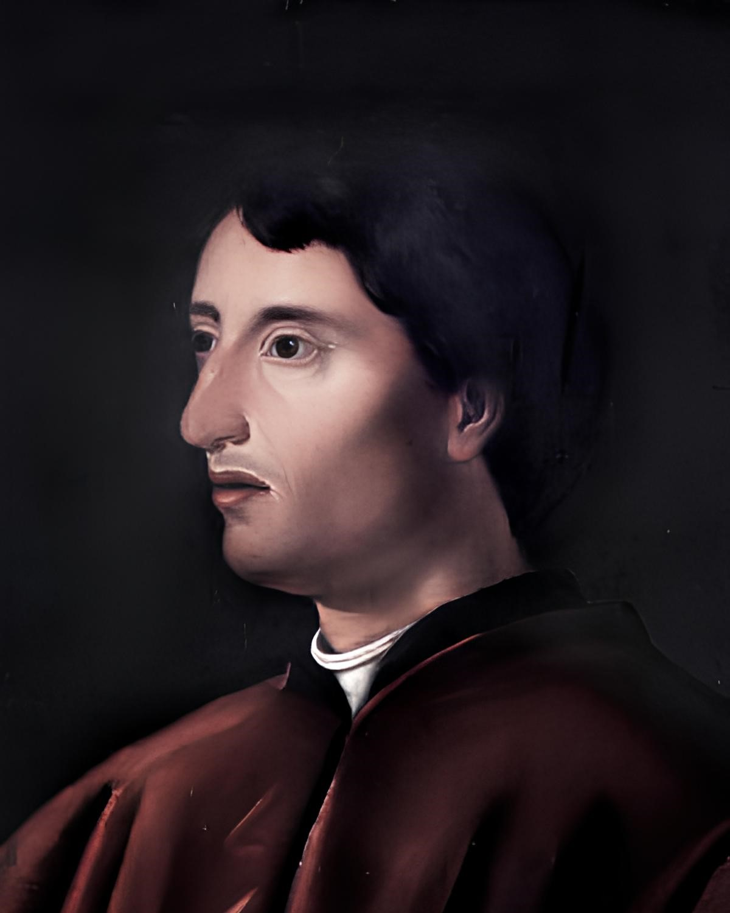
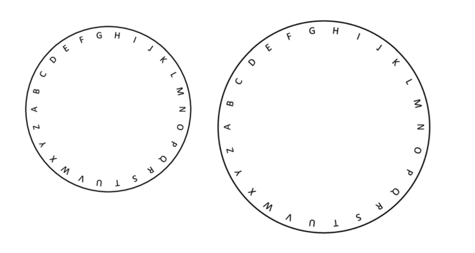
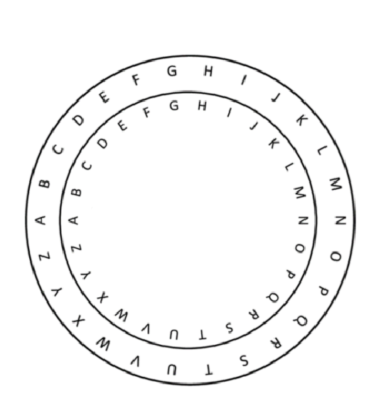
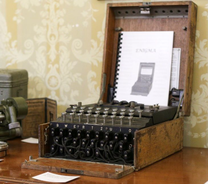
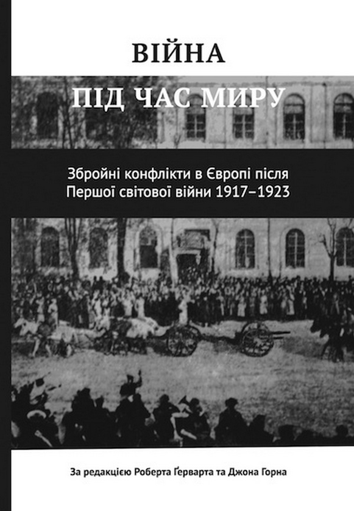

Його пристрій був досить простий, він взяв мідний диск і наніс по колу весь алфавіт своєї мови (латинь), аналогічно він зробив із другим диском меншого діаметра і поєднав їх, закріпивши в центрі. Цей пристрій отримав назву – шифрувальний диск.
Те, з чого все почалось..
У давнину шляхом приховування секретної інформації була звичайна писемність. Грамотних людей було дуже мало, тому освіченіші люди могли просто писати повідомлення на аркушах паперу — більшість людей просто не були здатні до їх прочитання. Але час минав, люди ставали дедалі грамотнішими і виникла потреба у складних системах шифрування.
Італія 15 століття, саме в цей час італійський архітектор Леон Альберті вигадує пристрій, який буде основою до всіх методів шифрування в майбутньому.

Що з зробив Леон?


Диск більшого діаметра позначає літери тексту, який ми хочемо зашифрувати, другий диск, відповідно, букви зашифрованого тексту.
Прокрутивши внутрішній алфавіт на три позиції, ми отримаємо ніщо інакше як шифр Цезаря. Який був досить популярним десь 100 років до н.е.
Якщо ж змінювати алфавіт для шифрування кожної наступної літери обертаючи диск(внутрішні) згідно з ключем, отримуємо - шифр Віженера .
А додавши ще два таких шифрувальних дисків, проводів, клавіатуру, лампочку, батарею та додати до цього рівняння Артура Шербіуса, то в результаті ми отримуємо Енігму – модель а, яку в 1919 року було запатентовано.
Перші спроби..
Сам Артур розробив енігму для комерційної кореспонденції, особливо для банків і аж ніяк не для військових цілей. Але варто зазначити, що шифрувальна машина не користувалася значним попитом. Можливо, через те що ця роторна машина важила близько 50 кілограмів, або, тому що коштувала вона на той час купу грошей, або через те що для розшифровки потрібно було купити іншу машину, щоб розшифрувати все ж таки то повідомлення. Причин не купувати її було достатньо і це розуміли всі і навіть Шербіус, тому модель с, була маленькою, як друкарська машинка і мала два режими ( шифрування \ дешифрування ).

1926 рік - Перші німецькі шифратори більш компактних і дешевих моделей надійшли в армію і флот німеччини і тоді почалося вдосконалення енігми німецькими криптографами.
Через два роки сухопутна армія отримала нову «енігму g», яка згодом активно використовувалася під час війни і різними німецькими службами та організаціями. Одним з головних відмінностей нового варіанту енігми від першої комерційної моделі було покращена якість шифрування.
Всього було випущено близько 100 тисяч машин «енігма» , більшість з яких були знищені німцями для збереження секретності.
Навіщо це все?
Вдосконалювати тисячі разів енігму, яку і так ніхто не міг взламати на той час, може здатись нерозумно, але 1923 року британський адмірал випустив “Історію Першої світової війни”, розповівши всьому світові про свою перевагу в тій війні завдяки зламу німецького коду.
1914 року російські війська, потопивши німецький крейсер “Магдебург”, виловили труп офіцера, що притискає до грудей журнал з військово-морським кодом. Знахідкою поділилися і з союзником Англією і німці втратили свою перевагу у вигляді неочікуваності.
Німецька військова еліта, переживши шок і проаналізувавши хід бойових дій після того випадку, зробила висновок, що подібного фатального витоку інформації надалі допускати не можна. А коли Гітлер почав готувати нову війну, шифрувальне диво увійшло в обов'язкову программу, енігма відразу ж стала затребуваною.
